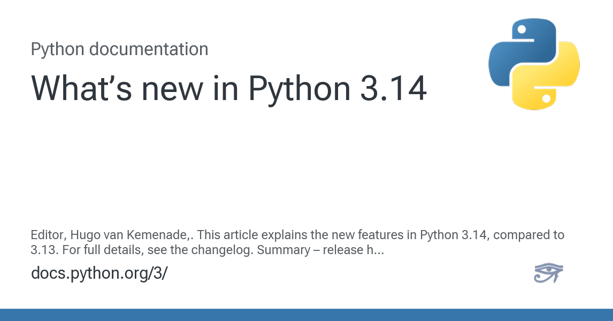

Python 3.14: Key Improvements and New Features

Python 3.14 introduces several significant improvements focused on performance, developer experience, and language capabilities. This guide covers the most important changes that will impact your code and development workflow.
Performance Improvements
Free-Threading (Experimental)
Python 3.14 continues the experimental free-threading support introduced in 3.13, with significant improvements:
# Enable free-threading with --disable-gil flag
# Better performance for CPU-bound multi-threaded applications
import threading
import time
def cpu_intensive_task(n):
total = 0
for i in range(n):
total += i ** 2
return total
# Now benefits more from true parallelism
threads = []
for i in range(4):
t = threading.Thread(target=cpu_intensive_task, args=(1000000,))
threads.append(t)
t.start()
for t in threads:
t.join()JIT Compilation Improvements
Enhanced Just-In-Time compilation for better runtime performance:
# Functions with hot loops see significant speedups
def fibonacci(n):
if n <= 1:
return n
return fibonacci(n-1) + fibonacci(n-2)
# JIT compiler optimizes recursive calls more effectively
result = fibonacci(35) # Noticeably faster than previous versionsLanguage Features
Improved Type Annotations
Enhanced support for generic types and better inference:
from typing import Generic, TypeVar
T = TypeVar('T')
class Stack(Generic[T]):
def __init__(self) -> None:
self._items: list[T] = []
def push(self, item: T) -> None:
self._items.append(item)
def pop(self) -> T:
if not self._items:
raise IndexError("Stack is empty")
return self._items.pop()
# Better type inference
stack = Stack[int]()
stack.push(42)
value = stack.pop() # Type checker knows this is intPattern Matching Enhancements
Improved pattern matching with new syntax options:
def process_data(data):
match data:
case {"type": "user", "id": int(user_id), "active": True}:
return f"Active user: {user_id}"
case {"type": "user", "id": int(user_id), "active": False}:
return f"Inactive user: {user_id}"
case {"type": "admin", "permissions": list(perms)} if len(perms) > 0:
return f"Admin with {len(perms)} permissions"
case _:
return "Unknown data format"
# Enhanced guard conditions and destructuring
result = process_data({"type": "user", "id": 123, "active": True})New String Methods
Additional string manipulation methods for common operations:
text = "Hello, World! How are you today?"
# New methods for better string handling
words = text.split_keep_separator(" ") # Keeps separators
# Result: ["Hello,", " ", "World!", " ", "How", " ", "are", " ", "you", " ", "today?"]
# Improved case conversion
title_text = "hello-world_example"
result = title_text.to_title_case() # "Hello World Example"
# Better whitespace handling
messy_text = " \t\n Hello World \t\n "
clean_text = messy_text.normalize_whitespace() # "Hello World"Error Handling Improvements
Enhanced Exception Groups
Better support for handling multiple exceptions:
import asyncio
async def fetch_data(url):
if "invalid" in url:
raise ValueError(f"Invalid URL: {url}")
if "timeout" in url:
raise TimeoutError(f"Timeout for: {url}")
return f"Data from {url}"
async def fetch_multiple():
urls = ["http://valid.com", "http://invalid.com", "http://timeout.com"]
try:
results = await asyncio.gather(
*[fetch_data(url) for url in urls],
return_exceptions=True
)
except* ValueError as eg:
print(f"Value errors: {len(eg.exceptions)}")
for exc in eg.exceptions:
print(f" - {exc}")
except* TimeoutError as eg:
print(f"Timeout errors: {len(eg.exceptions)}")
for exc in eg.exceptions:
print(f" - {exc}")Improved Traceback Information
More detailed and helpful error messages:
def process_nested_data(data):
return data["users"][0]["profile"]["email"].upper()
# Better error messages show the exact path that failed
try:
result = process_nested_data({"users": []})
except (KeyError, IndexError) as e:
# Error message now includes: "Failed accessing: data['users'][0]"
print(f"Access error: {e}")Standard Library Updates
Enhanced pathlib
New methods for better file system operations:
from pathlib import Path
path = Path("./my_project")
# New methods for common operations
if path.is_empty_dir():
print("Directory is empty")
# Better glob patterns
python_files = path.rglob("*.py", follow_symlinks=True)
# Atomic operations
config_file = path / "config.json"
config_file.write_text_atomic('{"version": "1.0"}') # Atomic write operationImproved asyncio
Better async/await support and performance:
import asyncio
# New context manager for better resource cleanup
async def main():
async with asyncio.TaskGroup() as tg:
task1 = tg.create_task(fetch_data("url1"))
task2 = tg.create_task(fetch_data("url2"))
task3 = tg.create_task(fetch_data("url3"))
# All tasks complete or all cancelled if one fails
print("All tasks completed successfully")
# Improved timeout handling
async def with_timeout():
try:
async with asyncio.timeout(5.0):
result = await slow_operation()
return result
except asyncio.TimeoutError:
print("Operation timed out")
return NoneNew itertools Functions
Additional utilities for working with iterators:
import itertools
# New batching function
data = range(15)
batches = list(itertools.batched(data, 4))
# Result: [(0, 1, 2, 3), (4, 5, 6, 7), (8, 9, 10, 11), (12, 13, 14)]
# Improved pairwise iteration
points = [(0, 0), (1, 1), (2, 4), (3, 9)]
segments = list(itertools.pairwise(points))
# Result: [((0, 0), (1, 1)), ((1, 1), (2, 4)), ((2, 4), (3, 9))]Development Tools
Better REPL Experience
Enhanced interactive Python shell:
# Improved auto-completion and syntax highlighting
# Better error recovery - continue working after syntax errors
# Enhanced help system with examples
# New REPL commands
# %time <expression> - Time execution
# %edit <function> - Edit function in external editor
# %history - Show command historyDebugging Improvements
Better debugging capabilities:
import pdb
def complex_function(data):
# New breakpoint() enhancements
breakpoint() # Now supports conditional breakpoints
processed = []
for item in data:
# Enhanced step-through debugging
result = item * 2
processed.append(result)
return processed
# Better integration with IDE debuggers
# Improved variable inspection
# Enhanced stack trace navigationMigration Considerations
Deprecated Features
Features removed or deprecated in 3.14:
# Deprecated: Old-style string formatting (still works but discouraged)
# old_way = "Hello %s" % name
# Better: Use f-strings or .format()
new_way = f"Hello {name}"
# Removed: Some legacy asyncio APIs
# Use modern async/await syntax consistently
# Deprecated: Certain distutils modules
# Use setuptools or build system alternativesCompatibility Notes
Important changes that might affect existing code:
# Stricter type checking in some standard library functions
# May need to update type annotations
# Changed behavior in some edge cases for consistency
# Review code that relies on previous undefined behavior
# Updated default parameters for some functions
# Check documentation for functions you use extensivelyPerformance Benchmarks
Typical performance improvements you can expect:
- General Python code: 10-15% faster execution
- Multi-threaded applications: Up to 40% improvement with free-threading
- String operations: 20-25% faster for common operations
- Import time: 15-20% faster module loading
- Memory usage: 5-10% reduction in typical applications
Getting Started
Installation
# Install Python 3.14
python3.14 -m pip install --upgrade pip
# Check version
python3.14 --version
# Enable experimental features
python3.14 --disable-gil script.py # For free-threadingMigration Checklist
- Test your existing code with Python 3.14
- Update type annotations to use new features
- Review deprecated warnings in your codebase
- Consider enabling free-threading for CPU-bound applications
- Update development tools and IDE configurations
- Benchmark performance improvements in your applications
Best Practices
Taking Advantage of New Features
# Use enhanced pattern matching for complex data processing
def process_api_response(response):
match response:
case {"status": "success", "data": list(items)} if len(items) > 0:
return [process_item(item) for item in items]
case {"status": "error", "message": str(msg)}:
raise APIError(msg)
case _:
raise ValueError("Unexpected response format")
# Leverage improved async features
async def robust_async_operation():
async with asyncio.TaskGroup() as tg:
tasks = [tg.create_task(operation(i)) for i in range(5)]
return [task.result() for task in tasks]
# Use new string methods for cleaner code
def clean_user_input(text):
return text.normalize_whitespace().strip()Python 3.14 represents a significant step forward in Python’s evolution, focusing on performance, developer experience, and language consistency. The improvements make Python more efficient and enjoyable to work with while maintaining the language’s commitment to readability and simplicity.